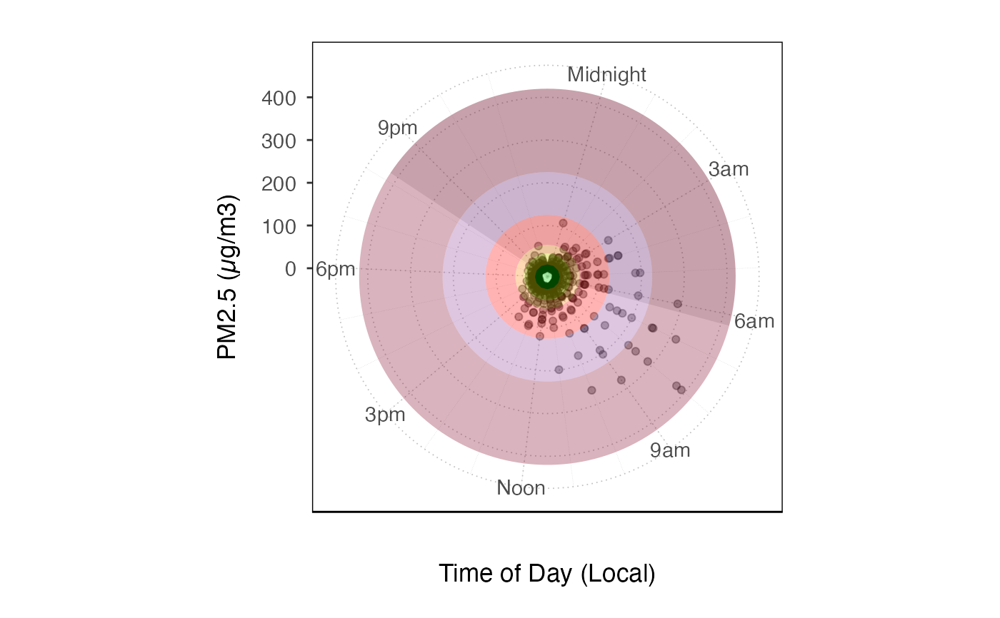

Create a plot using ggplot with default mappings and styling. Layers can then
be added to this plot using ggplot2 syntax.
ggplot_pm25Diurnal( mts_monitor, startdate = NULL, enddate = NULL, timezone = NULL, ylim = NULL, shadedNight = TRUE, mapping = aes_(x = ~hour, y = ~pm25), base_size = 11, ... )
Arguments
| mts_monitor | Default dataset to use when adding layers. Must be either a
|
|---|---|
| startdate | Desired startdate for data to include, in a format that can be parsed with parseDatetime. |
| enddate | Desired enddate for data to include, in a format that can be parsed with parseDatetime. |
| timezone | Timezone to use to set hours of the day |
| ylim | custom y-axis limits. This function will apply a default limit depending on the data. |
| shadedNight | add nighttime shading based on of middle day in selected period |
| mapping | Default mapping for the plot |
| base_size | Base font size for theme |
| ... | Additional arguments passed on to
|
Examples
mts_monitor <- AirMonitor::Carmel_Valley ggplot_pm25Diurnal(mts_monitor) + coord_polar() + geom_pm25Points() + custom_aqiStackedBar(width = 1, alpha = .3)#> Warning: Removed 9 rows containing missing values (geom_pm25points).ggplot_pm25Diurnal( mts_monitor, startdate = 20160801, enddate = 20160810 ) + stat_boxplot(aes(group = hour))#> Warning: Removed 7 rows containing non-finite values (stat_boxplot).